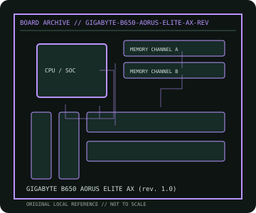

[ INDIVIDUAL COMPONENT // MOTHERBOARDS ]
GIGABYTE B650 AORUS ELITE AX (rev. 1.0)
AMD Socket AM5 B650 ATX desktop platform, 2022. This record documents the named model and its documented variants; confirm the PCB revision, submodel and firmware on the physical unit.

REVISION WARNING: Similar model names and PCB revisions may have different processors, connectors or firmware. Read the silkscreen and assembly code; use the support files for that exact board variant.
Specifications
| Catalog subcategory | Modern AMD platforms |
|---|---|
| Exact model / era | GIGABYTE B650 AORUS ELITE AX (rev. 1.0) — AMD Socket AM5 B650 ATX desktop platform, 2022 |
| CPU and socket / SoC | Socket AM5 Ryzen 7000/8000/9000-series support subject to exact board revision, CPU table and BIOS |
| Chipset / platform | AMD B650 |
| Memory | Four DDR5 DIMM slots, dual-channel, up to 192 GB listed; EXPO speeds are overclocking profiles and CPU/QVL-dependent |
| Slots and connectivity | ATX; two PCIe x16-length slots, three M.2 sockets, four SATA 6 Gb/s, 2.5GbE, Wi-Fi 6E/BT on AX version, USB-C and USB 3.2 |
| Firmware | GIGABYTE UEFI; AX product and PCB revisions can have different radio modules and firmware. Use Rev. 1.0 page only when PCB reads rev. 1.0. |
Compatibility and revision notes
Socket AM5 uses LGA contacts on the motherboard; DDR5 only. CPU and BIOS determine graphics/PCIe capability, and M.2/SATA routing must follow the board manual.
Socket, connector shape and family branding alone do not establish compatibility. Verify the exact processor list, minimum BIOS, memory population table, power input, dimensions, and shared-lane behavior in the cited manual before installation.
Preservation and repair
Protect the exposed AM5 socket pins, record wireless module/MAC labels and BIOS version, and check M.2 thermal pads before installing drives. Update BIOS with Q-Flash instructions for the exact revision.
For archival preservation, photograph the PCB, labels, connectors and included accessories before cleaning. Record serial/date codes, firmware versions, known faults, prior repairs and test conditions; use ESD-safe handling and do not power a board with loose conductive hardware beneath it.
Sources & further reading
- GIGABYTE B650 AORUS ELITE AX (rev. 1.0) — product/manual referenceModel-specific platform, board layout and interface reference.
- GIGABYTE B650 AORUS ELITE AX (rev. 1.0) — support and firmware resourcesSupport documentation; match the PCB revision, CPU support list and firmware release to the physical board.
Manufacturer/model documentation is the primary reference. Where vendor support is archived, match its revision notes to the board and do not cross-flash firmware from a similar product.